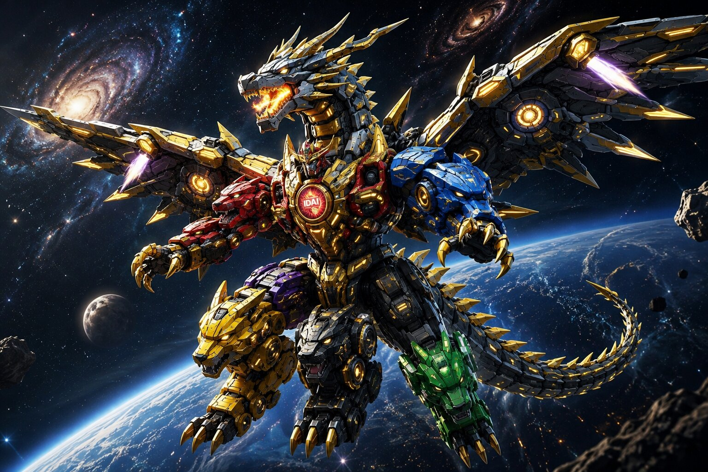

The Dragon Mega‑Zord blazes with celestial fire, embodying rebirth and cosmic might. The Eagle Mega‑Zord spreads its radiant wings across the skies, a sentinel of vigilance and freedom. Beneath the waves, the Shark Mega‑Zord rules the abyss, its sonar piercing the silence of the deep. Swift and agile, the Rabbit Mega‑Zord races across battlefields, striking with unmatched speed and precision. The Gorilla Mega‑Zord stands as the titan of earth, its colossal fists shattering mountains with raw strength. Silent yet deadly, the Scorpion Mega‑Zord delivers venomous justice with lethal precision. The Space UFO Mega‑Zord transcends boundaries, warping across dimensions as a cosmic guardian. Finally, the Tiger Mega‑Zord prowls the plains, its predatory instincts and plasma claws making it the relentless hunter of justice.
Together, these eight legendary fusions — each born from the unity of the six Guardian Zords with a single epic Zord — form a pantheon of protectors. They are not just machines, but living symbols of courage, vigilance, and humanity’s eternal promise to rise against darkness. Each Mega‑Zord stands as a sentinel in its domain — sky, sea, land, and cosmos — proving that true strength lies in diversity and unity.

The Dragon Mega-Zord is the ultimate guardian of the IDAI Power Rangers, formed by the perfect synchronization of all seven Guardian Zords under the guidance of the Cragnon Super Quantum Computer. Unlike a standard Mega-Zord, this extraordinary machine represents the highest level of technological achievement within the IDAI Universe, combining the unique strengths of the Red Panther, Blue Leopard, Pink Rhino, Gold Unicorn, Yellow Wolf, Grey Tank, and the legendary Dragon Zord into a single celestial defender. Designed for planetary, orbital, and interstellar operations, the Dragon Mega-Zord serves as the final line of protection whenever humanity faces challenges beyond the capabilities of the individual Guardian Zords.
Every component of the Dragon Mega-Zord is powered by an advanced Proxima Centauri quantum energy system, enabling limitless endurance, exceptional flight performance, adaptive combat intelligence, and seamless coordination across every operational environment. Its majestic dragon-inspired wings provide unparalleled maneuverability through Earth's atmosphere and the vastness of space, while its intelligent armor continuously adapts to changing mission requirements. Rather than symbolizing destruction, the Dragon Mega-Zord embodies unity, courage, innovation, and responsible guardianship. Standing as the most prestigious creation of the IDAI Power Rangers program, it reflects the belief that the greatest strength is achieved when every guardian works together to protect humanity, preserve peace, and inspire hope for future generations.

The Eagle Mega-Zord is the skyborne sentinel of the IDAI Power Rangers, forged through the perfect fusion of the six Guardian Zords with the legendary Eagle Zord. Unlike ordinary formations, this colossal machine embodies vigilance and freedom, combining the ferocity of the Red Panther, the agility of the Blue Leopard, the resilience of the Pink Rhino, the mystic power of the Gold Unicorn, the speed of the Yellow Flying Wolf, the unyielding defense of the Steel Tank, and the celestial wings of the Eagle Zord. Together, they create a guardian designed for atmospheric dominance, orbital defense, and interstellar missions.
Powered by the Skyfire Quantum Energy Core, the Eagle Mega-Zord possesses limitless endurance, adaptive combat intelligence, and unparalleled aerial maneuverability. Its radiant wings, feathered with energy panels, allow it to soar through storms, pierce the stratosphere, and glide across the void of space. Armed with the Celestial Saber, it strikes with precision and majesty, a beacon of justice in every battle. More than a weapon, the Eagle Mega-Zord symbolizes unity, vigilance, and the eternal promise of guardianship. Standing as a luminous sentinel above the Nova Capital Province, it reminds humanity that the greatest strength of the IDAI Power Rangers lies not only in their power, but in their unyielding watch over peace and hope.

The Space UFO Mega-Zord is the cosmic sentinel of the IDAI Power Rangers, formed by the unbreakable unity of the six Guardian Zords with the interstellar might of the UFO Zord. Unlike terrestrial formations, this colossal machine embodies the essence of infinity, combining the ferocity of the Red Panther, the agility of the Blue Leopard, the resilience of the Pink Rhino, the mystic power of the Gold Unicorn, the speed of the Yellow Flying Wolf, the unyielding defense of the Steel Tank, and the radiant disc of the UFO Zord. Together, they create a guardian designed for planetary defense, orbital missions, and deep-space exploration.
Powered by the Quantum Nebula Reactor, the Space UFO Mega-Zord possesses limitless endurance, adaptive combat intelligence, and unparalleled interstellar mobility. Its luminous disc crown channels cosmic energy, allowing it to warp across dimensions, shield entire fleets, and strike with devastating precision. Armed with the Stellar Blade, it cuts through darkness like a beacon of hope. More than a weapon, the Space UFO Mega-Zord symbolizes transcendence, unity, and humanity’s eternal reach for the stars. Standing as a celestial guardian above the Nova Capital Province, it reminds all that the IDAI Power Rangers are not bound by Earth alone — they are protectors of peace across the galaxy.

The Rabbit Mega-Zord is the swift vanguard of the IDAI Power Rangers, born from the perfect fusion of the six Guardian Zords with the legendary Rabbit Zord. Unlike conventional formations, this colossal machine embodies speed, vigilance, and precision, combining the ferocity of the Red Panther, the agility of the Blue Leopard, the resilience of the Pink Rhino, the mystic power of the Gold Unicorn, the speed of the Yellow Flying Wolf, the unyielding defense of the Steel Tank, and the lightning reflexes of the Rabbit Zord. Together, they create a guardian designed for rapid deployment, tactical strikes, and battlefield agility.
Powered by the Quantum Velocity Core, the Rabbit Mega-Zord possesses limitless endurance, adaptive combat intelligence, and unmatched acceleration. Its luminous circuits blaze across the battlefield, allowing it to outmaneuver enemies, strike with precision, and retreat with grace. Armed with the Swift Saber, it delivers rapid, decisive blows that overwhelm even the most formidable foes. More than a weapon, the Rabbit Mega-Zord symbolizes vigilance, resilience, and the eternal promise of guardianship. Standing as the fastest sentinel of the Nova Capital Province, it reminds humanity that the IDAI Power Rangers are always one step ahead, ready to defend peace with unstoppable speed.

The Gorilla Mega-Zord is the earthbound titan of the IDAI Power Rangers, forged through the perfect fusion of the six Guardian Zords with the colossal Gorilla Zord. Unlike aerial or aquatic formations, this mighty machine embodies raw strength, resilience, and unyielding stability, combining the ferocity of the Red Panther, the agility of the Blue Leopard, the resilience of the Pink Rhino, the mystic power of the Gold Unicorn, the speed of the Yellow Flying Wolf, the unbreakable defense of the Steel Tank, and the towering might of the Gorilla Zord. Together, they create a guardian designed for terrestrial dominance, fortress defense, and ground-shattering combat.
Powered by the Terra Quantum Core, the Gorilla Mega-Zord possesses limitless endurance, adaptive combat intelligence, and unmatched physical strength. Its colossal fists can shatter mountains, its armored frame withstands the heaviest assaults, and its roar echoes like thunder across the battlefield. Armed with the Titan Hammer, it delivers devastating blows that crush even the most formidable enemies. More than a weapon, the Gorilla Mega-Zord symbolizes resilience, courage, and the eternal promise of guardianship. Standing as the immovable sentinel of the Nova Capital Province, it reminds humanity that the IDAI Power Rangers are steadfast protectors, ready to defend peace with the might of the earth itself.

The Scorpion Mega-Zord is the venomous protector of the IDAI Power Rangers, born from the perfect fusion of the six Guardian Zords with the legendary Scorpion Zord. Unlike aerial or terrestrial formations, this colossal machine embodies precision, vigilance, and retribution, combining the ferocity of the Red Panther, the agility of the Blue Leopard, the resilience of the Pink Rhino, the mystic power of the Gold Unicorn, the speed of the Yellow Flying Wolf, the unyielding defense of the Steel Tank, and the lethal stinger of the Scorpion Zord. Together, they create a guardian designed for subterranean missions, tactical ambushes, and decisive strikes.
Powered by the Venom Core Reactor, the Scorpion Mega-Zord possesses limitless endurance, adaptive combat intelligence, and unmatched precision. Its glowing stinger arcs high above, humming with lethal energy, while its claws rend through the battlefield with unstoppable force. Armed with the Venom Saber, it delivers piercing blows that paralyze even the most formidable enemies. More than a weapon, the Scorpion Mega-Zord symbolizes vigilance, justice, and the eternal promise of guardianship. Standing as the silent sentinel of the Nova Capital Province, it reminds humanity that the IDAI Power Rangers are relentless defenders, ready to strike whenever peace is threatened.

The Shark Mega-Zord is the abyssal titan of the IDAI Power Rangers, forged through the perfect fusion of the six Guardian Zords with the legendary Shark Zord. Unlike aerial or terrestrial formations, this colossal machine embodies vigilance, ferocity, and deep-sea dominance, combining the ferocity of the Red Panther, the agility of the Blue Leopard, the resilience of the Pink Rhino, the mystic power of the Gold Unicorn, the speed of the Yellow Flying Wolf, the unyielding defense of the Steel Tank, and the abyssal might of the Shark Zord. Together, they create a guardian designed for underwater combat, rescue operations, and oceanic defense.
Powered by the Abyssal Quantum Core, the Shark Mega-Zord possesses limitless endurance, adaptive combat intelligence, and unmatched aquatic maneuverability. Its glowing fins slice through the depths, its sonar systems pierce the silence of the abyss, and its armored frame withstands crushing oceanic pressure. Armed with the Trident of Eternity, it delivers devastating strikes that echo through the deep. More than a weapon, the Shark Mega-Zord symbolizes vigilance, courage, and the eternal promise of guardianship. Standing as the sentinel of the oceans, it reminds humanity that the IDAI Power Rangers are protectors not only of land and sky, but of the boundless seas as well.

The Tiger Mega-Zord is the predator of the eternal plains, forged through the perfect fusion of the six Guardian Zords with the feral might of the Tiger Zord. Unlike aerial or aquatic formations, this colossal machine embodies agility, ferocity, and dominance, combining the ferocity of the Red Panther, the agility of the Blue Leopard, the resilience of the Pink Rhino, the mystic power of the Gold Unicorn, the speed of the Yellow Flying Wolf, the unyielding defense of the Steel Tank, and the predatory instincts of the Tiger Zord. Together, they create a guardian designed for land supremacy, rapid strikes, and relentless pursuit.
Powered by the Terra-Trac Quantum Core, the Tiger Mega-Zord possesses limitless endurance, adaptive combat intelligence, and unmatched speed across every terrain. Its claws rend through steel, its roar echoes across battlefields, and its luminous eyes pierce the shadows of war. Armed with the Plasma Fang Blades, it delivers devastating slashes that overwhelm even the most formidable foes. More than a weapon, the Tiger Mega-Zord symbolizes vigilance, courage, and the eternal promise of guardianship. Standing as the prowling sentinel of the Nova Capital Province, it reminds humanity that the IDAI Power Rangers are relentless hunters of justice, ready to defend peace with claws of destiny.